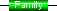
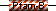
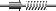

|
|

|
|
|
|
||||||||||||||||||||||||||||||||||||||||||||
|
||||||||||||||||||||||||||||||||||||||||||||||||
|
|
|
|
||||||||||||||||||||||||||||||||||||||||||||||
|
|
||||||||||||||||||||||||||||||||||||||||||||||||
|
||||||||||||||||||||||||||||||||||||||||||||||||
  

UNIPLOT_UNIPROT_ACC
onmouseover="return overlib('Click to view UniProt functional annotation for this sequence', WRAP);"
onmouseout="return nd();">

UNIPLOT_UNIPROT_ACC_aln

UNIPLOT_UNIPROT_ACC
title="Run SAS to retrieve all related PDB structures"
>

?


Struc:

NWIR_IMAGES>


usemap=#Map

_LOOP2]>
Struc:

NWIR_IMAGES>


PDB_CODE
 _COUNTER1]>
_COUNTER1]>


Key:
PfamA domain

PfamB domain


Secondary structure

CATH domain

*
PDB and UniProt seqs differ
at
Alpha Fold confidence scores:
:
 Very high;
Very high;
 Confident;;
Confident;;
 Low;
Low;
 Very low.
Very low.